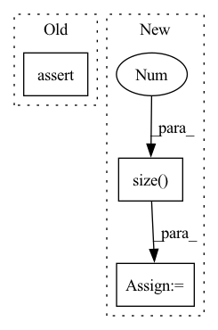

Pattern ID :7936
Before Change
n, ei = gen_edge_index(10)
g = qv.new_quiver_from_edge_index(n, ei)
g.sample_adj(torch.LongTensor([0, 1, 2]), 3)
assert True
test_quiver()After Change
def test_quiver():
n, ei = gen_edge_index(10, gen_non_uniform_adj)
eid = torch.LongTensor([100 * ei[0][i] + ei[1][i] for i in range(ei.size(1 ) )])
g = qv.new_quiver_from_edge_index(n, ei, eid)
neighbor, eid = g.sample_id(torch.LongTensor([7, 5, 3]), 3)
print(neighbor)In pattern: SUPERPATTERN
Frequency: 6
Non-data size: 3
Instances Fragment ID: 28180377
Project Name: quiver-team/torch-quiver
Commit Name: 3f2ae2c0042ff9b3b5e623dc5e97dbb475624b1c
Time: 2020-10-20
Author: 41138939+ZenoTan@users.noreply.github.com
File Name: examples/quiver_example.py
M Class Name: AnonimousClass
N Class Name: AnonimousClass
M Method Name: test_quiver(0)
N Method Name: test_quiver(0)
M Parent Class:
N Parent Class:
M File Name: examples/quiver_example.py
N File Name: examples/quiver_example.py
M Start Line: 19
M End Line: 20
N Start Line: 26
N End Line: 31
Before Change
batch_size = input.size(0)
time_step = input.size(1)
feature_dim = input.size(2)
assert feature_dim == self.n_input
self.agent1_action = []
self.agent1_prob = []After Change
batch_size = labtest.size(0)
time_step = labtest.size(1)
feature_dim = labtest.size(2 )
assert feature_dim == self.lab_dim
self.agent1_action = []
self.agent1_prob = [] Fragment ID: 28180376
Project Name: yhzhu99/covid-ehr-benchmarks
Commit Name: 41e28f49dd30d760c6c439a5cf41590262c9b76b
Time: 2022-06-24
Author: yhzhu99@gmail.com
File Name: app/models/backbones/agent.py
M Class Name: Agent
N Class Name: Agent
M Method Name: forward(2)
N Method Name: forward(3)
M Parent Class: nn.Module
N Parent Class: nn.Module
M File Name: app/models/backbones/agent.py
N File Name: app/models/backbones/agent.py
M Start Line: 118
M End Line: 204
N Start Line: 117
N End Line: 201
Before Change
torch.Tensor: loss as a single number for backpropagation
target, lengths = unpack_sequence(target)
assert not target.requires_grad
// calculate loss with "none" reduction
weight = target[1]After Change
if isinstance(target, rnn.PackedSequence):
target, lengths = unpack_sequence(target)
else:
lengths = torch.full((target.size(0 ) ,), fill_value=target.size(1), dtype=torch.long, device=target.device)
losses = self.loss(y_pred, target)
// weight samples Fragment ID: 28180379
Project Name: jdb78/pytorch-forecasting
Commit Name: 92f88552bd5b11a06841b9a2ab967e0ea856e59d
Time: 2020-12-23
Author: beitner.jan@bcg.com
File Name: pytorch_forecasting/metrics.py
M Class Name: MultiHorizonMetric
N Class Name: MultiHorizonMetric
M Method Name: update(3)
N Method Name: update(3)
M Parent Class: Metric
N Parent Class: Metric
M File Name: pytorch_forecasting/metrics.py
N File Name: pytorch_forecasting/metrics.py
M Start Line: 311
M End Line: 321
N Start Line: 404
N End Line: 418
Before Change
def __call__(self, x: Tensor, y: Tensor, target: Tensor = None, reduction: str = "mean"):
if target is None:
assert x.size(0) * self.target_per_qry == y.size(0)
target = torch.arange(
0, x.size(0) * self.target_per_qry, self.target_per_qry, device=x.device, dtype=torch.long)
logits = torch.matmul(x, y.transpose(0, 1))After Change
def __call__(self, x: Tensor, y: Tensor, target: Tensor = None, reduction: str = "mean"):
if target is None:
target_per_qry = y.size(0 ) // x.size(0)
target = torch.arange(
0, x.size(0) * target_per_qry, target_per_qry, device=x.device, dtype=torch.long)
logits = torch.matmul(x, y.transpose(0, 1)) Fragment ID: 28180378
Project Name: texttron/tevatron
Commit Name: cd1aa58c7f84e50022bf45f28c10545bf3fccf22
Time: 2022-03-21
Author: x93ma@edu.uwaterloo.ca
File Name: src/tevatron/loss.py
M Class Name: SimpleContrastiveLoss
N Class Name: SimpleContrastiveLoss
M Method Name: __call__(5)
N Method Name: __call__(5)
M Parent Class:
N Parent Class:
M File Name: src/tevatron/loss.py
N File Name: src/tevatron/loss.py
M Start Line: 13
M End Line: 15
N Start Line: 11
N End Line: 13
Before Change
def scale_qk(*xs: Tensor) -> tuple[Tensor, Tensor]:
Scale the qk tensor by the channel-dimension.
assert len(xs) == 2
return tuple(x * math.pow(x.size(-1), -1 / 4) for x in xs)
After Change
def scale_qk(q: Tensor, k: Tensor) -> tuple[Tensor, Tensor]:
Scale the qk tensor by the channel-dimension.
C = q.size(2 )
scale = math.pow(C, -1 / 4)
return q * scale, k * scale
Fragment ID: 28180372
Project Name: tfernd/sd-fused
Commit Name: 1aa81fa77e91e6f772dc5a1d8765d0ee8b70c88f
Time: 2022-11-08
Author: ThalesFDFernandes@gmai.com
File Name: sd_fused/layers/blocks/attention/fn/scale_qk.py
M Class Name: AnonimousClass
N Class Name: AnonimousClass
M Method Name: scale_qk(2)
N Method Name: scale_qk(0)
M Parent Class:
N Parent Class:
M File Name: sd_fused/layers/blocks/attention/fn/scale_qk.py
N File Name: sd_fused/layers/blocks/attention/fn/scale_qk.py
M Start Line: 11
M End Line: 13
N Start Line: 8
N End Line: 14
Before Change
occluded_elevation_map=output[ChannelEnum.OCCLUDED_ELEVATION_MAP])
// we require square dimension for now
assert output[ChannelEnum.GROUND_TRUTH_ELEVATION_MAP].size(0) == output[ChannelEnum.GROUND_TRUTH_ELEVATION_MAP].size(1)
if type(self.config["size"]) == list:
assert self.config["size"][0] == self.config["size"][1]
input_size = output[ChannelEnum.GROUND_TRUTH_ELEVATION_MAP].size(0)After Change
assert sample_map.size(0) == sample_map.size(1)
if type(self.config["size"]) == list:
assert self.config["size"][0] == self.config["size"][1]
input_size = sample_map.size(0 )
if type(self.config["size"]) == list:
output_size = self.config["size"][0]
elif type(self.config["size"]) == int:
output_size = self.config["size"] Fragment ID: 28180374
Project Name: mstoelzle/solving-occlusion
Commit Name: 5f12931e2f2e6a17cf0ac6ebeea5606ea7e88086
Time: 2020-10-21
Author: maximilian@stoelzle.ch
File Name: src/datasets/base_dataset.py
M Class Name: BaseDataset
N Class Name: BaseDataset
M Method Name: prepare_item(2)
N Method Name: prepare_item(2)
M Parent Class: ABC
N Parent Class: ABC
M File Name: src/datasets/base_dataset.py
N File Name: src/datasets/base_dataset.py
M Start Line: 56
M End Line: 104
N Start Line: 57
N End Line: 119